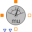

TransientTransient fundamental wave sensors |
|
Package Contents
|  |
FundamentalWavePermabilitySensor Sensor of fundamental wave permeability |
|
Determines permeability from flux and magnetic potential difference |
Information
This information is part of the Modelica Standard Library maintained by the Modelica Association.
This package contains sensors to be used with transient flux tubes models in order to provide information for quasi static parameters.